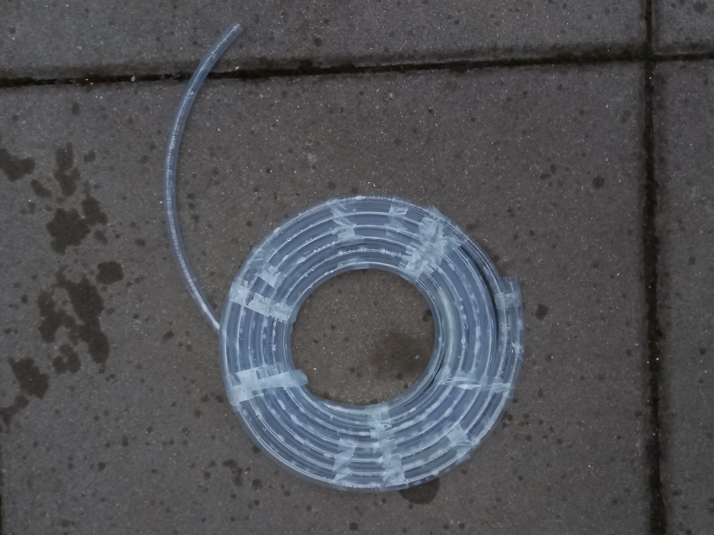
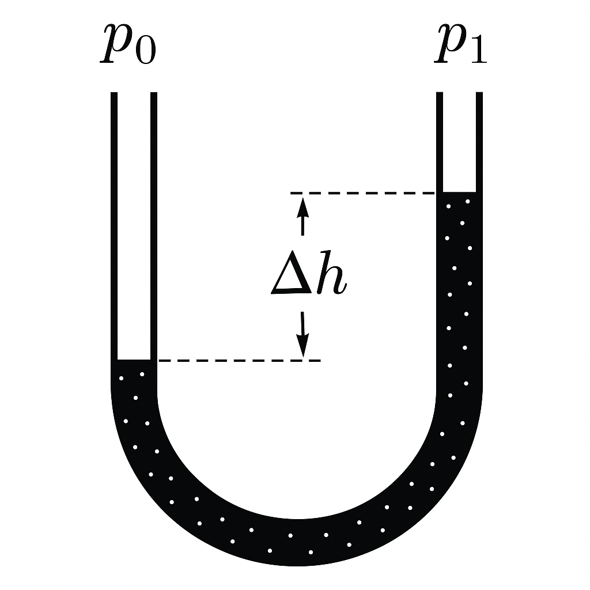
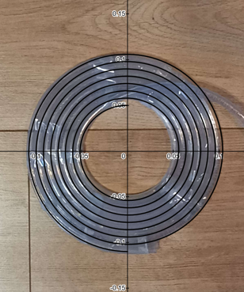
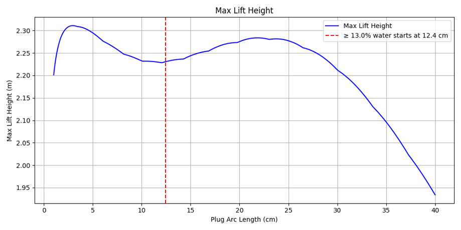
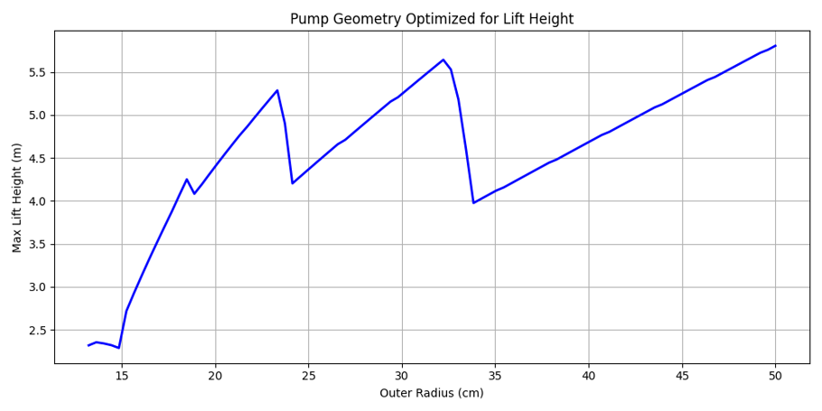
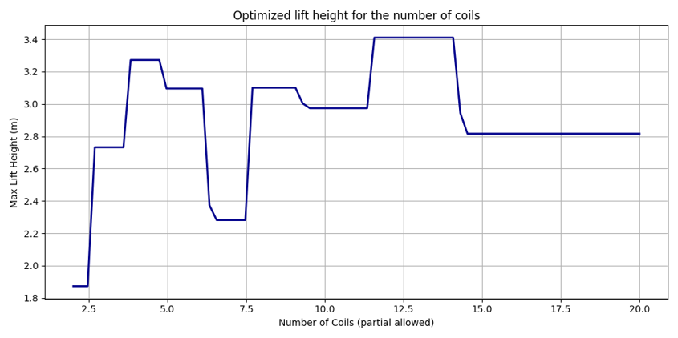
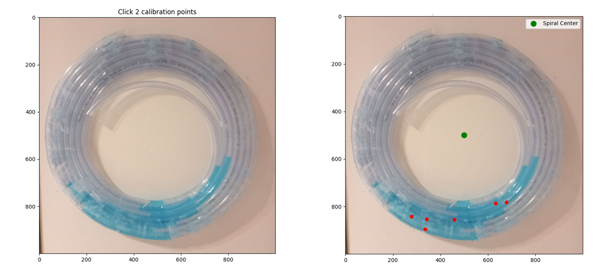
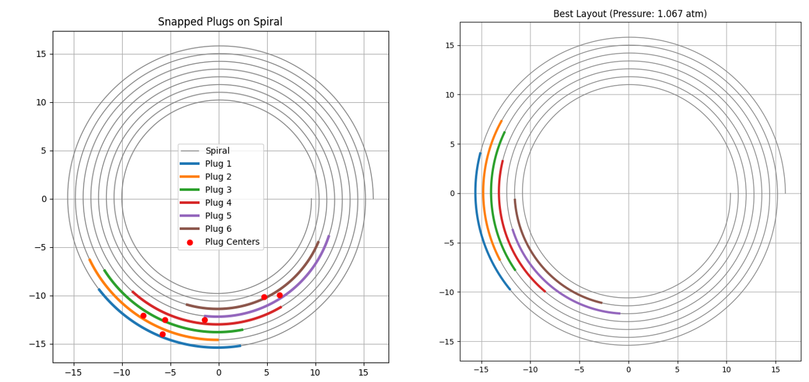

Introduction
Analyzing this device will help us understand important physical phenomena in a simple and illustrative way.
What is the Wirtz Pump?
Generally, this term refers to a spiral pump, usually in the form of an Archimedean spiral (which I will talk about later). The spiral is mounted vertically in such a way that its intake dips below the water surface once per revolution. Water and air plugs are created and move inward through the pump.
What Will Be Discussed:
- The physics behind the pump.
- The process of coding a numerical simulation and its limitations.
- Using the simulation to practice curve fitting.
- Interesting ideas for optimizing pumping height, work, and flow.
How does it work?
HERE WILL BE A VIDEO
When the intake dips below the surface, water enters the system. With further rotation, water will flow towards the center and then, through a rotary connection, to a vertical pipe.
Pascal's Law
The most basic mechanism which lets the pump generate pressure is Pascal's law and its implications: pressure is proportional to the vertical height of a water column. Let's first consider a U-shaped coil with liquid inside.
Let's say \( p_1 \) is just atmospheric pressure and \( p_0 \) is the pressure "pushing" water inside the coil. Then, we get:
$$ p_0 = \rho g \Delta h \tag{1} $$where \( \rho \) is density and \( \Delta h \) is the height difference between the surfaces.
Each plug of a Wirtz pump where \( \Delta h \neq 0 \) will generate some pressure.
Spiral Shape
We will mostly consider the Archimedean spiral. While other shapes could be more beneficial for pressure generation, the Archimedean spiral seems like a very practical approach. On the image below, we can observe how a practical spiral matches almost perfectly the theoretical shape.
We can describe this with a simple formula in the polar coordinate system:
$$ r(\psi) = b \cdot \psi \tag{2} $$For:
$$ \frac{r_p}{r_z} \cdot 2\pi - \pi(2o-1) \leq \psi \leq \frac{r_p}{r_z} \cdot 2\pi \tag{3} $$Where:
\( r_p \) - pump outer radius
\( r_z \) - coil diameter
\( o \) - the number of coils
\( b = \frac{r_z}{2 \pi} \) - the pump coefficient
The Beauty Of Air Locks
Okay, but... Since there is some distance between each plug, how is the pressure transferred? Well, we need to consider a phenomenon called "air locks." It happens when the pipes are narrow enough for capillary effects to play a major role. If the surface tension of the water is greater than the force of gravity acting upon it, no air will "move" through the water plug and it will transfer the pressure over to the next plug. Let's consider the Young-Laplace equation:
$$ \Delta p = \gamma \left( \frac{1}{R_1} + \frac{1}{R_2} \right) \tag{4} $$Where:
\( \Delta p \) - surface pressure
\( \gamma \) - surface tension coefficient
\( R_1, R_2 \) - principal radii of curvature
Simplifying for a simple circular tube, we get:
$$ \Delta p = \frac{2\gamma}{r} \tag{5} $$And this effect will only fully work when:
$$ \Delta p \geq \rho g h \tag{6} $$So, we've set the domain of radii for a capillary-based pump. But could the air locks still work to some extent when this is not fully fulfilled? Also, what if the capillary effects are able to carry a noticeable amount of water but less than the entirety of each water plug? While these questions are fundamental to understanding real practical pumps, let's first focus on a full capillary pump.
Capillary Pump - Pressure Analysis
We need to consider the arc length and position of water plugs to determine how much pressure each generates. Let's call the arc length \( l_0 \). Now, considering the geometrical properties of an Archimedean spiral, we first need to obtain the angular "length", which then can be transferred to arc length. We will use an approximation for volume:
$$ V = l_0 \pi r^2 \tag{7} $$Keeping in mind that \( V \) is constant if the plugs are intact the entire time, we can observe that \( l_0 \) must be constant as well. Let's now approximate the angular "length" - considering a position where the intake is exactly below the surface we can very easily derive:
$$ \delta = \cos^{-1} \left( \frac{b \psi_{max} - h_d}{\psi_{max}} \right) + \cos^{-1} \left( \frac{b(\psi_{max} - 2\pi) - h_d}{b(\psi_{max} - 2\pi)} \right) \tag{8} $$Where:
\( h_d \) is the maximum depth the intake will be below the surface.
Now let's write the function which transfers the total angle to arc length as \( f(\alpha) \):
$$ f(\alpha) = \frac{b}{2} \left( \alpha \sqrt{\alpha^2 + 1} + \ln \left( \alpha + \sqrt{\alpha^2 + 1} \right) \right) \tag{9} $$So then:
$$ l_0 = f(\psi_{max}) - f(\psi_{max} - \delta) \tag{10} $$This equation was tested practically and gave very similar results (around a 2% error, probably due to measurement inconsistencies).
Going back to plug pressure equation from before:
$$ p_0 = \rho g \Delta h \tag{11} $$Since we're analysing the pump in polar coordinates, we can use:
$$ h(\psi) = r(\psi) \sin(\psi) \tag{12} $$And finally generalizing:
$$ \Delta p_i = \rho g b \left( (\psi_i-\gamma) \sin(\psi_i-\gamma) - (\psi_i+\gamma) \sin(\psi_i+\gamma) \right) \tag{13} $$Where:
$$ \gamma = \frac{\delta}{2} \tag{14} $$And \( \psi_i \) is the total angle to the center of the plug. But wait, can't this equation result in negative pressure? Absolutely! "Negative" pressure just means that pressure is generated in the opposite direction, towards the intake. Plugs that generate such pressure will make the system less efficient because we want to maximize the pressure at the outlet.
Capillary Pump - Air Compression
Since we consider a setup where no air moves between plugs, should we consider air compression? Short answer - yes, but only really for larger pumps. When pressure is relatively small, compression doesn’t change much. Still, for completeness: For isothermal behavior (Boyle's law), we have:
$$ V_n = \frac{p_0 V_0}{p_n} \tag{15} $$In small pumps, this compression effect is usually negligible.
Simulation Setup
Instead of setting up a full-blown mathematical dynamic system (like in this paper), I just decided to go with a Python simulation. Why? Because at the end of the day you have to simulate it numerically anyway...
Simulations
Each water plug was placed along the spiral centerline and contributed to the outlet pressure based on height difference. Air gaps between plugs compressed according to Boyle’s law, reflecting inverse pressure-volume relationships. For maximum lift height, I went with a naive assumption: just imagine raising a column of liquid with average system density.
We can write:
$$ \Delta h = \frac{p_{outlet}}{\rho_{avg} g} \tag{16} $$Let's check the diagrams produced with the simulation:

Here we see outlet pressure vs plug starting position offset.
Notice weird behavior for extremely short plugs. I think that's an artifact from naive simplifications.
Here, optimizing lift height based on fixed pipe length shows fewer coils with bigger pump radius is best.
Lift height vs number of coils — sharp jumps happen when a new plug appears or disappears.
Encounter with Reality
Comparing with real Wirtz pumps shows the capillary model breaks when pipes are too thick. However, in practice, air locks still resist water movement somewhat even outside perfect capillary conditions. I also built software to process pictures of real pumps, converting pixel distances to real-world coordinates to estimate plug positions after partial "relaxation".
 With some manual correction, the new simulation results were much closer to reality! I am still quite dissatisfied with the work and looking forward to constructing working capillary pumps and building an accurate model for predicting non-ideal capillary pumps.